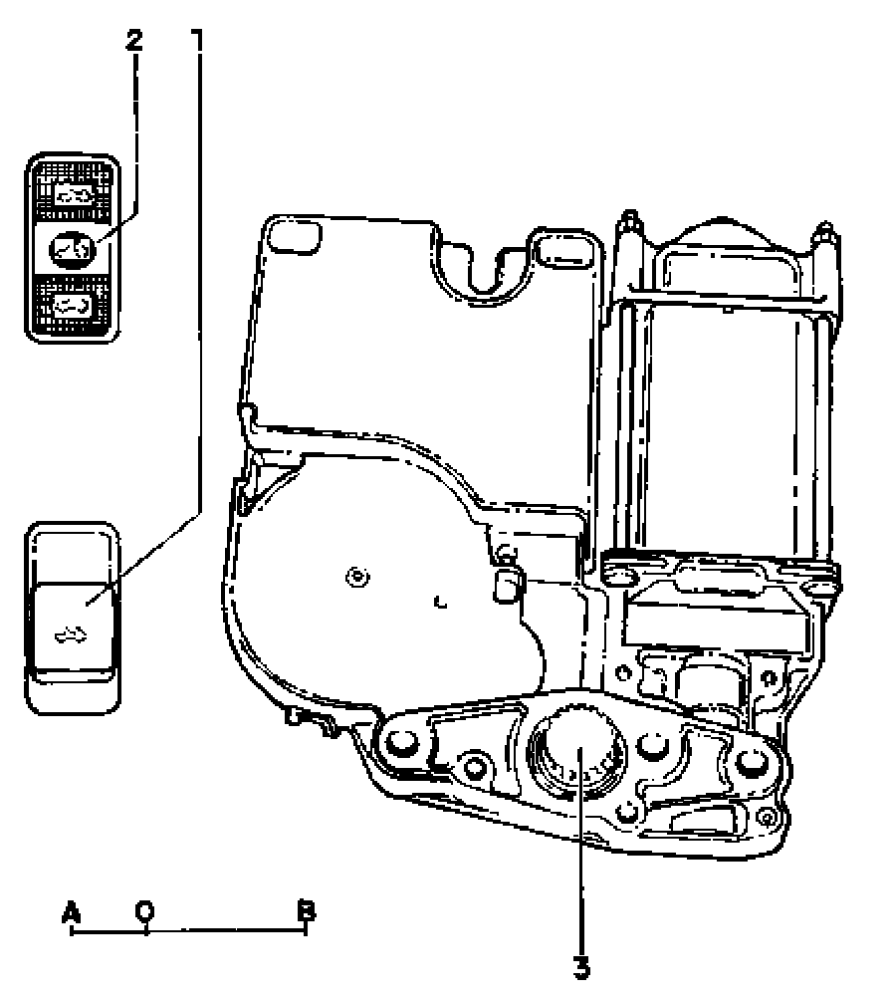

Cable Drive "0" Position Checking
Cable Drive "0" Position Checking

If the cable drive is replaced, it must be installed in "0" position (sunroof panel closed).
- Connect power sunroof control module J245 harness connector.
- Operate sunroof switch "E8" 1 or 2 and count rotations of drive pinion 3.
- The "0" position is between the end switch-off points A and B.
- End switch-off point B is reached by turning the drive pinion clockwise.
- End switch-off point A is reached by turning the drive pinion counterclockwise.
A End switch-off point for panel tilting function:
- Drive pinion rotates 2 turns to "0" position.
B End switch-off point for panel sliding function:
- Drive pinion rotates 8.25 turns to "0" position.
1 - Sunroof switch -E8- (08.94)
2 - Sunroof switch -E8- (09.94)
3 - Drive pinion
A - End switch- off point for panel tilting function
- Drive pinion rotates 2 turns to "0" position
B - End switch- off point for panel sliding function
- Drive pinion rotates 8.25 turns to "0" position